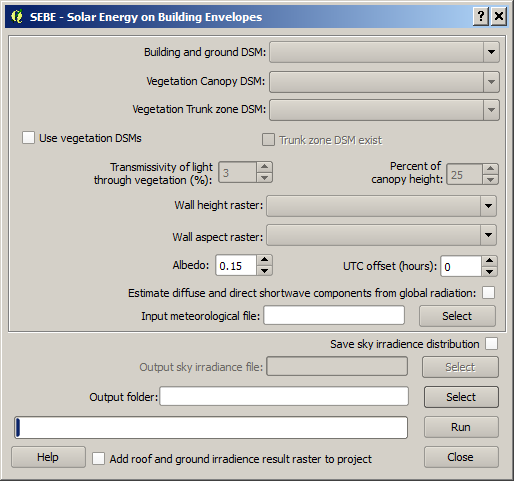
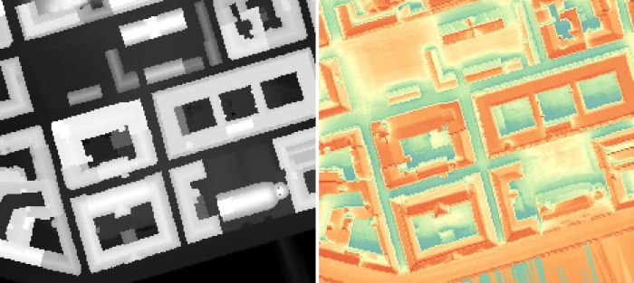

The
SEBE plugin (Solar Energy on Building Envelopes) can be used to
calculate pixel wise potential solar energy using ground and building digital
surface models (DSM). SEBE is also able to estimate irradiance on building
walls. Optionally, vegetation DSMs could also be used. The methodology that is
used to generate irradiance is presented in Lindberg et al. (2015).
The SEBE
plugin is located at UMEP -> Processor ->
Solar Radiation -> Solar Energy on Building Envelopes (SEBE).
When you
run plugin, you will see the dialog shown below. It consists of a top section
where input data is specified and a bottom section for specifying output and for
running the calculations.

A DSM
consisting of ground and building heights. This dataset also decides the
latitude and longitude used doe calculation of Sun position.
A DSM
consisting of pixels with vegetation heights above ground. Pixels where no
vegetation is present should be set to zero.
A DSM
(geoTIFF) consisting of pixels with vegetation trunk zone heights above ground.
Pixels where no vegetation is present should be set to zero.
Tick this
box if you want to include vegetation in the final SVF.
Tick this
in if a trunk zone DSM already exist.
Percentage
of light that is penetrating through vegetation. Default value is set to 3 %
according to Konarska et al. (2013).
If a trunk
zone vegetation DSM is absent, this can be generated based on the height of the
Canopy DSM. The default percentage is set to 25%.
A raster
of the same size and extent as the ground and building DSM including information
of the wall pixels and its height in meters above ground should be specified
here. Non wall pixels should be set to zero. This raster are used to estimate
irradiance on building walls and can be generated using the
Wall Height and Aspect plugin located
at UMEP -> Pre-processing -> Urban
Geometry -> Wall Height and Aspect.
A raster
of the same size and extent as the ground and building DSM including information
of the wall pixels and its aspect, i.e. angle, should be specified here. For
example a wall facing towards the south has a value of 180°. Non wall pixels
should be set to zero. This raster are used to estimate irradiance on building
walls and can be generated using the Wall
Height and Aspect plugin located at
UMEP -> Pre-processing -> Urban Geometry -> Wall Height and Aspect.
This
parameter specifies the reflectivity of shortwave radiation of all surfaces
(ground, roofs, walls and vegetation). It should be a value between 0 and 1. The
default value is set to 0.15.
Time zone
needs to be specified. Positive numbers increase when moving west (e.g.
Stockholm UTC +1).
Tick this
in if only global radiation is present. Diffuse and direct shortwave components
will then be estimated from global radiation based on the statistical model
presented by Reindl et al. (1990). If air temperature and relative humidity is
present, the statistical model will perform better but it is able to estimate
the components using only global shortwave radiation.
Input
meteorological data specifically formatted to be used in UMEP. This specific
format can be created using UMEP ->
Pre-processing -> Meteorological data -> Prepare existing data. A yearly
dataset with hourly time resolution should be used for SEBE. Multiple years can
also be used to improve the model outcome. Model output is dependent on the
meteorological input data so if a short dataset is used, potential solar energy
would be valid for the time period only.
Mandatory data is global shortwave
radiation, but model will perform best is also diffuse and direct components are
available.
The direct
radiation component used as input in the SOLWEIG model is not the direct
shortwave radiation on a horizontal surface but on a surface perpendicular to
the light source. Hence, the relationship between global radiation and the two
separate components are:
Global
radiation = direct radiation * sin(h) + diffuse radiation
where h is
the sun altitude. Since diffuse and direct components of short wave radiation is
not common data, it is also possible to calculate diffuse and direct shortwave
radiation (see above).
When the box is ticked
in, it is possible to save the radiation distribution from the sky vault
calculated from the meteorological file. SEBE first distributes the radiation on
145 sky patches on the sky vault and then generates shadows on the DSMs based on
these patches, i.e. the core loop in the model iterates 145 times. For more
detailed information on this, see Lindberg et al. (2015).
A
specified folder where result will be saved should be specified here. One raster
showing irradiance on ground and building roofs named
Energyyearroof.tif is saved as well
as a text file of wall irradiances (Energyyearwall.txt).
Also, the ground and building DSM is saved in the output folder to be used later
in a SEBE visualization plugin (UMEP ->
Post-processing -> Solar Energy -> SEBE (Visualisation)).
This
starts the calculations
If this is
ticked in, Energyyearroof.tif will be
loaded into to the map canvas
This
button closes the plugin.
As
mentioned earlier, three mandatory datasets are save is the model was
successful. The geoTIFF
Energyyearroof.tif show pixel wise total irradiance in kWh.
Energyyearwall.txt show total wall
irradiance for each wall column. The column voxel is decided based on the pixel
resolution of the input data. Also, the ground and building DSM is saved in the
output folder for later use. If the vegetation DSMs were added, one additional
file (Vegetationdata.txt) including
information of vegetation height and location are also saved. This file is also
be used in the SBEB visualization plugin.
The figure
below shows an example of input data and the resulting irradiance image in
Gothenburg using data from 1977.

- All DSMs
need to have the same extent and pixel size.
- This
plugin is computationally intensive i.e. large grids will take a lot of time and
very large grids will not be possible to use. Large grids e.g. larger than
4000000 pixels should be tiled before.
Konarska
J, Lindberg F, Larsson A, Thorsson S, Holmer B 2013. Transmissivity of solar
radiation through crowns of single urban trees—application for outdoor thermal
comfort modelling. Theoret. Appl. Climatol., 1–14 (link to paper)
Lindberg,
F., Jonsson, P. & Honjo, T. and Wästberg, D. (2015) Solar energy on building
envelopes - 3D modelling in a 2D environment. Solar Energy. 115 (2015) 369–378
(link to paper)
Reindl DT,
Beckman WA, Duffie JA (1990) Diffuse fraction correlation. Sol Energy 45:1–7